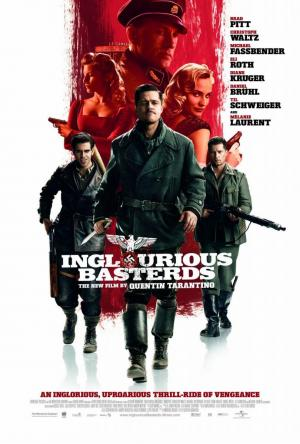

Porfavor, pulse en la peli de la que quiera saber mas información
INCEPTION

Dom Cobb (Leonardo DiCaprio) es un ladrón, prófugo de la justicia
estadounidense por el supuesto asesinato de su esposa, especializado en infiltrarse en
los sueños para robar ideas, claves de bancos, etc. mientras sus víctimas duermen.
AVATAR

Entramos en el mundo Avatar de la mano de Jake Sully,
un ex-Marine en silla de ruedas, que ha sido reclutado
para viajar a Pandora, donde existe un mineral raro y muy
preciado que puede solucionar la crisis energética existente en la Tierra.
EL JOKER

La pasión de Arthur Fleck, un hombre ignorado por la sociedad,
es hacer reír a la gente. Sin embargo, una serie de trágicos sucesos harán
que su visión del mundo se distorsione considerablemente convirtiéndolo
en un brillante criminal.
THE DARK KNIGHT

En su segundo año luchando contra el crimen, Batman explora la corrupción existente
en la ciudad de Gotham y el vínculo de esta con su propia familia. Además, entrará en
conflicto con un asesino en serie conocido como "el Acertijo".
MALDITOS BASTARDOS

II Guerra Mundial, Francia, Shosanna presencia la ejecución de su familia por orden del
coronel nazi Hans Landa. Huye a Paris y adopta una nueva identidad como propietaria de un cine.
Mientras el teniente Aldo Raine adiestra a un grupo de soldados judíos. Los hombres de Raine y
una actriz alemana que agente doble, deben llevar a cabo una misión que hará caer a los jefes del
Tercer Reich. El destino quiere que todos se encuentren bajo la marquesina de un cine donde
Shosanna espera para vengarse.